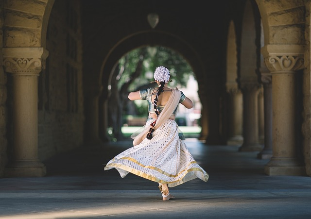

<p><strong> it’s so interesting and exciting, creating a great foundation for lifelong health and well-being!
If you want to have a little fun and get the exercise in, don’t worry about being good at it.

Dance is an opportunity for all adults of any fitness level to make friends while staying healthy without even realizing they are doing so!

Not only does it provide a great workout for you, but also prepares the body for other physical activities such as running or rock climbing!

Dance is a perfect way to stay fit and active while having fun, it provides an excellent foundation for future life-long health and fitness.</strong></p>
